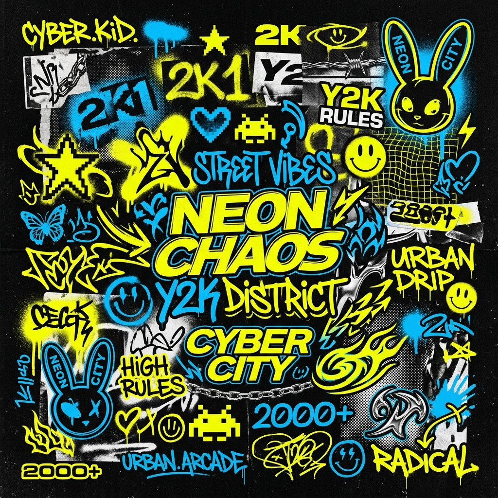

BRAND
GUIDE.
The definitive source for the POP CLTR visual and narrative DNA. Rules of engagement for the future of soda.
THE LOGO
ARCHETYPE.
The POP CLTR wordmark is built on the "EXACT WIDTH MATCH" protocol. The vertical tension between the dense, custom 'POP' and the wide, tracked-out 'CLTR' creates a perfect industrial rectangle.
| TYPEFACE | Custom ultra-wide display — closest commercial analog: Druk Wide Super (Commercial Type) |
| WEIGHT | Super / Heavy — maximum stroke expansion |
| APERTURES | Signature horizontal slit-cuts through the 'O' and 'P' bowls — proprietary POP CLTR modification |
| "CLTR" TRACKING | +600 to +800 letter-spacing — tuned to match exact pixel-width of "POP" above |
| FORM RULE | Both rows must share an identical horizontal span. Never break the rectangle. |
Ultra-wide, giga-bold display letterforms. The hallmark horizontal slit-apertures cut through the 'O' and 'P' to evoke high-velocity flow and the industrial gut-function aesthetic. Closest open reference: Druk Wide Super.
Same custom typeface at identical weight. Extreme letter-spacing (+600 to +800) is applied so the four letters span the exact same width as the 'POP' mark above. The visual tension is intentional.
Primary: #C8FF00 Neon Lime on black. Secondary: White on dark or black on white. Never use the logo on mid-tone backgrounds.
PRIMARY — WHITE ON BLACK

NEON LIME — BRAND HERO COLOR
BLACK ON WHITE — PRINT / COLLAB
THE VOICE
OF THE SODA.
Two typefaces carry the entire brand. The custom logo mark is the primary weapon — a purpose-built display type that exists nowhere else. Below it, a supporting cast of four commercially available typefaces handle every other communication need.
| LOGO MARK | Custom ultra-wide display — proprietary slit-aperture modification. Closest reference: Druk Wide Super (Commercial Type) |
| HEADLINE | Bricolage Grotesque — Weight 800, variable optical size |
| SUBHEAD | Syne — Weight 800, uppercase emphasis |
| DATA / UI | Space Grotesk — Weight 700, tight tracking |
| BODY | Inter — Weight 300–400, max-width 680px |
The Aggressor.
"POP" is the brand's primary weapon — a single syllable designed to hit with maximum visual force. The typeface is a custom ultra-wide, ultra-heavy display cut with no commercially available exact match. It was engineered specifically for this mark.
The letterforms sit in near-square proportions — the width of each letter closely matches its height. This is not a condensed face. It is not an extended face. It occupies a unique space: a giga-wide, giga-heavy monolith that reads as a single mass before it reads as three letters.
| CLASSIFICATION | Grotesque Sans-Serif, Display Cut, Ultra-Heavy |
| PROPORTIONS | Near-square — width ≈ height for each glyph |
| STROKE WEIGHT | Monoline-adjacent — minimal thick-thin contrast |
| TERMINALS | Slightly softened — rounded corners, not sharp |
| LETTER-SPACING | Optical / minimal — letters sit tight together |
| CLOSEST ANALOG | Druk Wide Super (Commercial Type) · Compacta Bold · Dharma Gothic E ExtraBold |
The defining feature of the POP CLTR logo is the horizontal slit-aperture — a narrow rectangular cut running through the counter space (the enclosed interior) of the 'O' and the bowl of the 'P'.
Visually, it turns a closed letter into a letterform with a velocity vector — as if high-pressure liquid or energy is passing through the form. This is not decorative. It communicates the brand's core function: gut-velocity. Flow. Internal kinetics.
The slits have a specific proportion: roughly 1:6 height-to-width ratio, centered vertically within the counter, and spanning the full interior width. They sit at the optical midpoint of the letter — not the mathematical center — to feel visually balanced.
Standard grotesque 'O' forms have an open round counter — no interior obstruction. The slit closes the interior, converting a passive shape into an active one. The 'O' stops being a circle and becomes a viewport — a pressurized opening. This is the difference between a window and a nozzle.
The Architect.
"CLTR" uses the exact same custom typeface as "POP" — identical letterforms, identical stroke weight, identical terminals. The only variable is letter-spacing. And that single variable changes everything.
Where "POP" packs its three letters with minimal tracking, "CLTR" applies extreme positive letter-spacing — estimated between +600 and +800 units in standard type measurement. The result: four letters that are visually airy, architectural, and industrial, forming a row of columns beneath the solid mass of "POP."
| BASE TYPEFACE | Identical to "POP" — same custom ultra-wide display cut |
| LETTER-SPACING | +600 to +800 units — extreme positive tracking |
| VISUAL EFFECT | Same heavy strokes, but with air between — industrial columns |
| THE RULE | CLTR total width = POP total width (±1px). This is non-negotiable. |
| SLIT APERTURES | Present in the 'C' open counter — consistent visual language |
The defining rule of the POP CLTR logo system: both wordmarks must span an identical horizontal width. The combined width of P-O-P at optical spacing must equal the combined width of C-L-T-R at extreme tracking. Pixel-perfect.
This creates a perfect industrial rectangle when the two rows are stacked. The logo is not two words sitting near each other — it is a single, unified geometric object. A block. A stamp. A mark.
The visual tension between POP's density (three letters, tight) and CLTR's openness (four letters, airy) within an identical bounding box creates a compressed / expanded duality — the same principle as a spring under tension.
"POP" is read first — it is shorter, bolder, louder. It commands. "CLTR" is read second — it expands, explains, contextualizes. Together they establish the brand's duality: the product (POP, the soda) and the movement (CLTR, the culture). The typography enacts what the brand says.
Single bowl, upper-half only. Slit-aperture cuts horizontally through the bowl's interior. Stem descends full height. The bowl does not reach the baseline.
Near-rectangular form with rounded corners. The dominant feature: a full-width horizontal slit cutting through the center. Both strokes of equal weight — no optical correction.
Wide, open counter with a generous aperture. The opening is large — nearly 60% of the total width. The terminals (top and bottom) are horizontal, not angled. The open form amplifies the airy tracking of "CLTR."
Two strokes. The vertical stem at full height, the horizontal foot at the baseline. No serif. The foot is shorter than the cap-width — the overall silhouette is a short, wide L-shape. The shortest letter in the set.
Wide crossbar sits at cap-height, spanning the full glyph width. Centered vertical stem. The crossbar has a pronounced weight — nearly as wide as the full glyph — making the T read as a capped column.
Full bowl at the top half (like the P). Below the bowl: a diagonal leg kicks out to the right. The leg is straight, not curved — consistent with the industrial, non-humanist character of the full mark.
SODAFEELS
Variable grotesque with wide optical range. Used for campaign headlines, section titles, and any text that needs to fill space with authority. The go-to typeface for everything below the logo.
THE CLTR IS HERE
Geometric sans at maximum weight. Used for callouts, sub-titles, and labels that live between the headline and body layers. Adds editorial tension when mixed with Bricolage Grotesque.
PREBIOTIC // 001
The clinical workhorse. Used for serial numbers, ingredient labels, UI elements, data displays, and any text that needs to feel technical and precise. The wide letter-spacing reinforces the brand's industrial DNA.
The quiet carrier of the brand's scientific depth. Used for paragraphs, footnotes, and extended copy that requires legibility at sustained reading length. Set at weight 300 for a deliberate contrast against the heaviness of the display stack above it.
THE COLOR
SPECTRUM.
V10.0 runs on "toxic-clinical" high-contrast pairings. Neon Lime is the primary brand signal. Electric Blue is the secondary anchor.
| PRIMARY | #C8FF00 — Neon Lime (logo, accents, CTA) |
| SECONDARY | #001AFF — Electric Blue (data, highlights) |
| ACCENT 03 | #FF00FF — Electric Pink (campaign bursts) |
| ACCENT 04 | #39FF14 — Neon Green (formulation cues) |
| ACCENT 05 | #FF4D00 — Coral Pop (Dalandan / heat) |
| BASE | #000000 — Pure Black (primary background) |
| LIGHT | #F0EEE9 — Off-White (clinical / print) |
#C8FF00
#001AFF
#FF00FF
#39FF14
#FF4D00
THE SIGNATURE
PROTOCOL.
POP CLTR exists at the intersection of three core pillars: Clinical Science, Urban Chaos, and Disco Energy. Every asset must carry DNA from at least two.
CLINICAL INDUSTRIALISM
Grid systems, serialized item numbers, sterile backgrounds, and clinical data readouts. The science is the spectacle.
PLAYFUL CHAOS
Hand-drawn doodles, sticker-bomb layers, intentional misalignment. The gut feeling has a visual language.
DISCO DYNAMICS
Vibrant neons, high-contrast grain photography, and late-night city energy. We are a drink for the active culture.
SIGNATURE
MARKINGS.
The hand-drawn elements are the soul of the can. Each glyph represents the gut-brain connection and the raw kinetic energy of the flavors. Applied to cans, packaging, and activations.
| STROKE WEIGHT | 2–4px hand-drawn irregular — never geometric/perfect |
| COLOR | White over color, Neon Lime over black, Black over white |
| PLACEMENT | Always off-axis. Overlapping the can edge is encouraged. |
| SCALE | Variable. Mix micro-details with macro signature marks. |

Y2K Sticker Library — Master Reference Sheet v1.0